To open the query interface, first select two or more projects in the Project Manager panel.
Then select the Queries button at the lower right of the Project Manager to open the queries interface.
The initial view is illustrated on the lower right. Note: the words Project and Species are used interchangeably.
> Overview
The Overview panel lists the projects (i.e. sequenced species) which were selected for querying.
| Notes:
Algo2: The Olap column can take on two different meanings; see Gene info. Pseudo: The pseudo Gene# can be displayed in two different ways; see Pseudo. If there is a list in parenthesis, it contains the pairs that do not have numbered pseudo. Synteny: This line only exists if not all pairs have synteny computed. If there is a list in parenthesis, it contains the list of pairs that do not have synteny. | 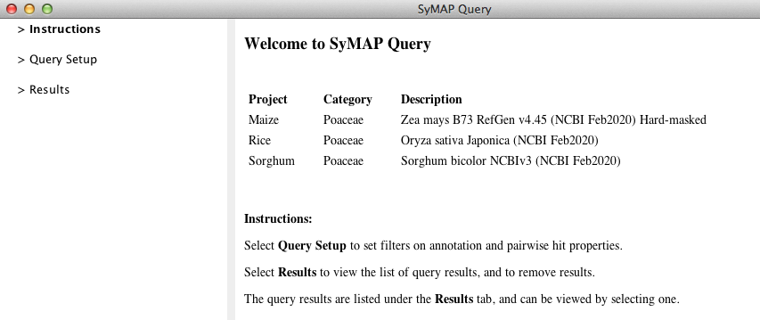 |

Open the Query Setup window by clicking on its tab in the left panel.
> Query Setup
| 1. Rules | 2. General | 3. Single genes | 4. Pair hits | 5. Compute Groups | Go to top |
1. Rules
This section covers the general rules for querying the database.
| Setup | Hit#, Gene# | Pseudo | Wait/Stop | Go to top |
Setup
|
Set the desired filters and then select Run Query to execute it.
When the search is complete, the table result panel will be displayed.
→Single queries returns rows without a hit, and each table row lists one gene from one project. →Pair hits queries return a row per hit pair, i.e. aligned region between two chromosomes from two projects. →The Annotation Description and Group queries can take a long time on big databases; it helps to reduce the output/time by setting %Sim and/or %Olap. | 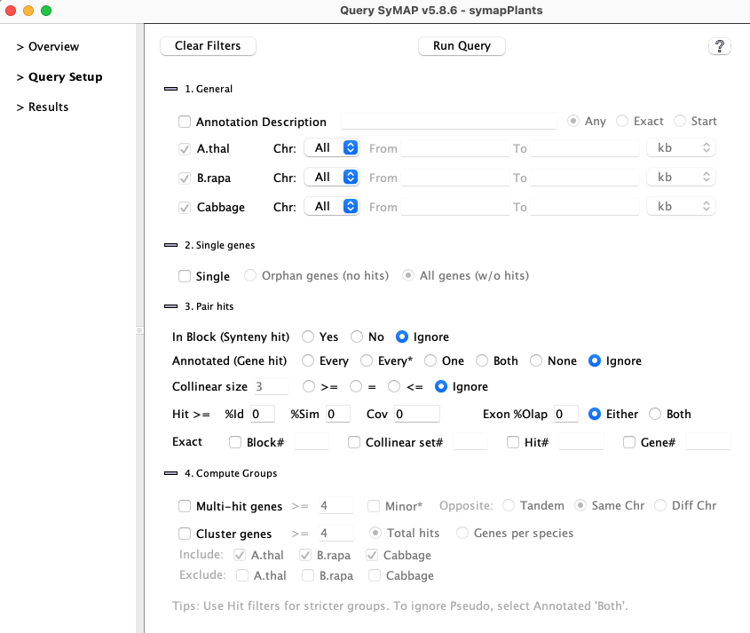 |

→Most filters can be used in conjunction with other filters. If a combination will produce 0 results:
- Options with check boxes will disabled filters that cannot be used.
- On Run Query, there will be a popup message stating the filter combination will not work, and the query is aborted.
→If one or more of the input projects are not annotated, or there are not numbered pseudos:
- Some filters will not be relevant; these will not be shown.
- However, for some of the options like Search..., these conditions are not checked.
Hit#
| All Hit# are uniquely numbered for a chromosome pair, e.g. there will be a Hit# 2 on all chromosome pairs that have hits. | 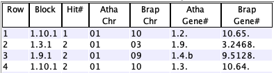 |

| Gene#
All genes have a Gene#, which are sequentially numbered per chromosome, e.g. there will be a Gene# 3 on all chromosomes that have at least 3 non-overlapping genes. Overlapping genes have the same number, but different suffixes, e.g. 185.a, 185.b and 185.c. Major and Minor genes:
|
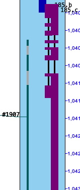 |

A hit that does not overlap a gene (annotated from the .gff file) is an un-annotated pseudo gene.
It may be numbered or un-numbered, depending on the parameter setting when the database was built.
The Queries Overview will say whether they are numbered or not.
|
Not numbered: The Gene# column will show the chromosome followed by ".~".
Numbered: These are numbered sequentially, where the counts start after the annotated gene numbers, hence, providing a unique Gene#. | 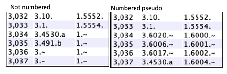 |

Wait/Stop Query:
→ Wait for the current query to stop running before starting another!
It is not possible to start a new query from the same query panel, but you could start one from a different table; if you do this, they both will fail!
|
→Stop
When a query is running, you will see a status line and the Stop button. It cannot stop the database search, but once the search is done, it stops all subsequent processing. |
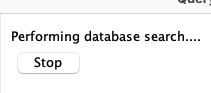 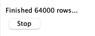 |


2. General

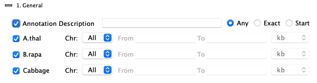
Annotation Description
- Enter a substring: the entire All_Anno attributes column (see Columns)
will be searched for the substring, as follows.
- Any: A match anywhere in All_Anno.
- Exact: For each 'keyword=value' pair, the value will be checked for an exact match.
- Start: For each 'keyword=value' pair, the value will be checked for a match at the beginning.
- By default, either end of the hit can have the annotation.
To restrict the search to one end, see Unselect species below. - If there are no additional filters, this is slow on large databases.
Chromosome
| Chr | Select a specific chromosome for the species. | |
| From | The Hit Start coordinates for the selected chromosome will be >= this number. | |
| To | The Hit End coordinates for the selected chromosome will be <= this number. |
It is valid to enter only the From or To, or leave both blank.
Restrictions:
- The From and To are disabled for Single genes, Block#, Collinear set#, Hit#, and Gene#.
- If more than one chromosome is selected in conjunction with Gene#, Multi or Cluster, the Run Query will popup a message that is it not allowed, and stop.
| Unselect species: When Annotation Description, Single, or Gene# is selected, the check boxes beside the species names will be activated. In order to have the search only occur on one species, deselect the others as shown on the right. Additionally, a single chromosome can be selected, but From/To cannot be entered. |
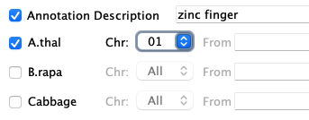 |

- Say the string 'zinc finger' was entered for Annotation and A.thal Chr01 was selected.
- If all species are selected, all hits on A.thal Chr01 that have 'zinc finger' on either end will be displayed.
- If the other species are deselected as shown in the above right image, displayed hits must have 'zinc finger' on the A.thal Chr01 end (though the other end may also contain 'zinc finger').
3. Single genes
| The Single queries produces rows of genes; there is no hit or block information since the rows do not represent hits. The Annotation Description filter can be used with the Single options. |
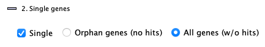 |

- Orphan genes (no hits)
Genes that do not a have a hit and meet the additional filters. The orphan genes are relative to the projects shown on the Overview page. For example, if species X, Y and Z have synteny computed between all pairs, but only X and Y are selected, the orphan genes for X would be those with no hits to Y. If X,Y&Z are selected, the orphan genes for X would be those with no hits to Y and Z.
- All genes (w/o hits), i.e. genes with and without hits
This shows all genes that meet the additional filters, regardless if they have a hit or not. There is always the same set of genes for a project, regardless of synteny.
- Unselect species: The species check boxes activate, as described above. Uncheck all but one species will limit the results shown to the one species.
4. Pair hits
| Block | Annotated | Collinear size | Hit >= | Exact | Go to top |
|
Each hit connects two species (projects) and hence represents a pair of aligned
regions for two of the selected species.
Filters are as follows: |
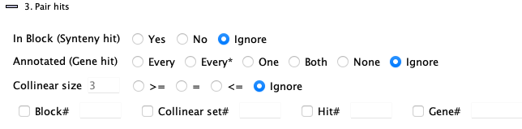 |

In Block (Synteny Hit)
| Yes | Only hits that are part of a synteny block will be returned.
All hits will have a value for the Block column. | ||
| No | Only hits that are NOT part of a synteny block will be returned.
No hits will have a value for the Block column. |
Annotated (Gene Hit)
| Every | Only hits that align to a gene on one or both sides of the hit will be shown.
The Gene# column will list the major genes. | |
| Every* | This is like the Every option, but a hit may be listed multiple times if it aligns to minor genes. The minor Gene# will be suffixed with an "*" and the Hit Type column will show '--' (unknown). | |
| One | Only hits that align to a gene on ONE end will be shown.
The Gene# column will show the major gene for the end with the hit. | |
| Both | Only hits that align to genes on BOTH ends will be shown.
The Gene# column will show the major gene for both ends of the hit. | |
| None | Only hits that do NOT align to a gene on either end will be shown.
The Gene# column will only have the pseudo representation. | |
| If a species chromosome is selected along with One option, the hit must be to the selected chromosome, but the "one" gene can be on either end. Same for Every or Every*. | ||
Collinear size
| >=, =, <= N | List all hits in collinear sets that have size >= N or = N or <= N, respectively.
The Collinear column will have a value for all rows. | |
| Ignore | Do not filter on collinear set sizes. | |
| See Collinear, which explains the SyMAP collinear sets. | ||
Hit >=
| %Id, %Sim, Cov, %Olap | Enter the lower limit number for one or more of these text boxes. |
| %Olap Either Both | Select Either for the lower limit to be on either gene.
Select Both for the lower limit to be on both genes. |
| Corresponding columns: | |
| %Id, %Sim, Cov | These correspond to the hit columns of the same name. |
| %Olap | This corresponds to the gene column of the same name. |
Exact
| For the following 4 filters, do not include the 'Chr' number. Instead use the chromosome pull-downs (from General section) to narrow the search to a specific chromosome, as exampled in the following Block# description. | |
| Block# |
Enter a single block number (the Block column is formatted Chr.Chr.Block#).
Narrow the search by using the chromosome pull-downs, e.g.
|
| Collinear Set# | Enter a set number (the Collinear column is formatted Chr.Chr.Size.Set#).
Narrow the search by using the chromosome pull-downs. |
| Hit# | Enter a hit number. Both major and minor gene hits will be shown.
Narrow the search by using the chromosome pull-downs. |
| Gene# | Enter a Gene# number (the Gene# column is formatted Chr.Gene#.suffix).
|
5. Compute Groups
| 1. Multi-hit genes | 2. Cluster genes | Go to top |
These two options are computed on the fly. They produce query results with values for the Group column; this in turn allows the View 2D Group-chr option to be used.
4.1. Multi-hit genes

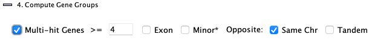
- List all annotated genes that have >= N hits to another species. All >= N hits will be to one species.
- The annotated gene can have >= N hits to un-annotated regions, regardless if they are numbered pseudos. Use the Both genes filter to exclude them.
- These can be pre-filtered by a species chromosome (only one can be selected), %Sim, etc.
- Multi-hit Gene Report... is a good way to see a condensed view of the results. This is especially useful if there are >2 species selected.
- See the Multi-hit Genes section of Statistics.
The options are as follows:
|
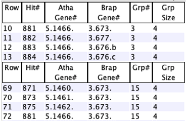 | ||||||||||||||||||||


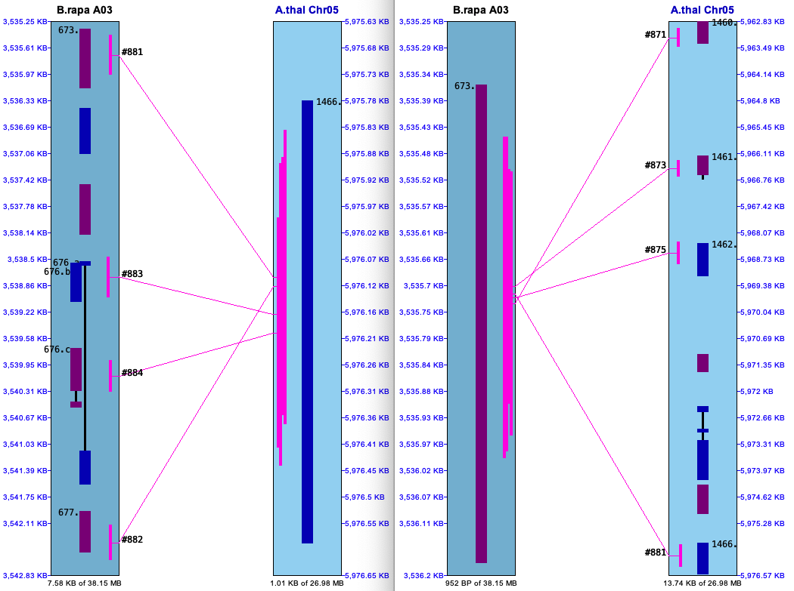
4.2. Cluster genes
This algorithm was updated in v5.7.9; the old one did not provide complete results.- This algorithm finds clusters of overlapping genes. That is, every gene in the cluster aligns to at least one other gene in the cluster, and all genes that align to any gene in the cluster are included.
- Each cluster is given a group number, which is shown in the results table with column name Group.
- These can be pre-filtered by species chromosome (only one can be selected), %Sim, %Olap, etc.
Note: the hits are first filtered on these values, then clustered. For example, if the hits are first removed that have %Sim<80, then clustered with Cabb Excluded, the resulting clusters will be those without a Cabb hit of %Sim>=80. - Pseudo (un-annotated) will be included if they are number.
Use Both genes to exclude pseudo; use One gene to only show gene to pseudo. - Beware: huge clusters can be created!!!
- For large databases, it is wise to first try filters as described in item 3 and 4.
- The algorithm does not save any clusters that have >20,000 hits.
- In order to show all clusters regardless of size, start viewSymap -ac; note, it may run out-of-memory creating the clusters, and the Cluster Report probably will not finish gracefully.
- See Cluster Report... for a good way to see a condensed view of the results. This also will show totally linked clusters.
| Cluster genes > =N:
The N entered will apply to whichever of the following options is selected: |
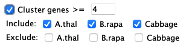 |

| Total hits | The cluster must have at least N hits, and it must contain at least one gene from each included species. |
| Genes per species | The cluster must have at least N genes from each included species. A better N may be 2, as the default 4 is a big requirement. |
| If there is more than two species, the following options will be present: | |
| Include | The clusters are created, and then any cluster without at least one gene from each included species is removed. |
| Exclude | The clusters are created, and then any cluster with at least one gene from an excluded species is removed. |
| Neither | If a species is not Include or Exclude, it can be in a cluster 0 or more times. However, there must be two included species. |
Alternative algorithm:
PgeneF: If you start viewSymap with the "-pg" flag, you will see the filters from the original PgeneF cluster algorithm. →Note: the PgeneF feature has not been tested for a long time except superficially (i.e. making sure it has the same results as the previous release).
| If you start viewSymap with the "-pg" flag, you will see the filters as shown on the right. |
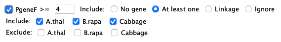 |

Result Panel
| 1. Results table | 2. Columns | 3. Statistics | 4. Top buttons | Go to top |
1. Results Table
A pair hits table
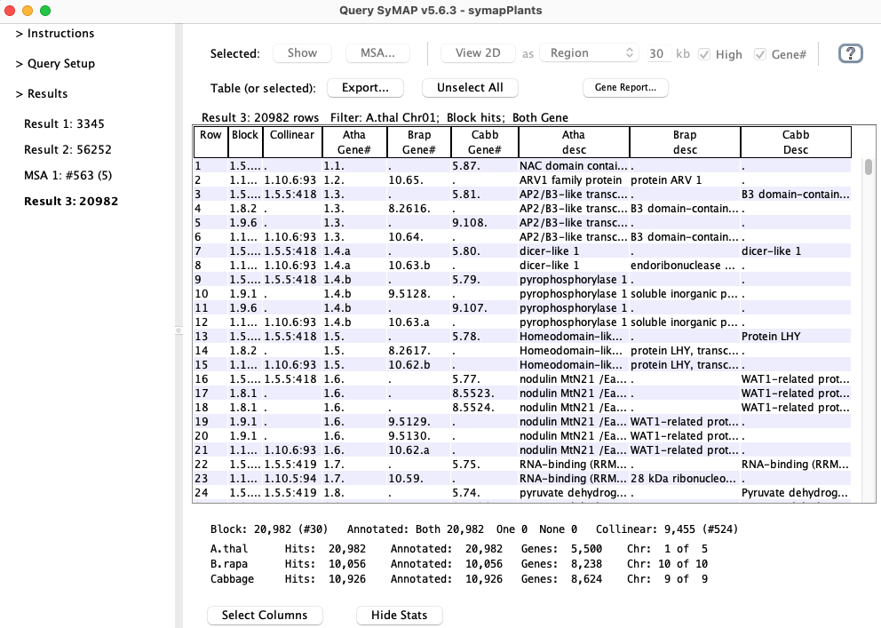
- Pair hits:
- The table contains columns for all of the selected species, but each hit only connects two species, and the other species columns are empty.
- Each Hit# is only listed once unless minor genes are included (see Minor) or the hits are in clusters.
- A gene may be listed more than once if it has multiple hits.
- Single genes:
- If the query specified Single genes, then each row represents one gene for a species.
You can sort the columns by clicking the column name in the table, and rearrange them by dragging the column name. You can add/remove columns using the Select Columns button at the bottom.
2. Columns
| 1. Pair hits columns | 2. Single gene columns | 3. Auto-save columns | Go to top |

| The buttons on the bottom will be Select Columns and Hide Stats.
If Select Columns is selected, it changes to Hide Columns and the Hide Stats is replaced with the 3 buttons explained below. |

| Clear | Clears the selection of all columns except Row#. |
| Defaults | Selects the default columns, which are shown in the image above. If the collinear query was run, this will include the Collinear. If the group query was run, this will include the Group. |
| Arrange | Arranges similar columns, putting the gene columns first. |
In the column panel shown above, hover over a column name to see its brief description. Following are the full descriptions of the columns.
2.1 Pair hits columns
| General | ||
| Row | Row number. This column does not sort and should stay checked. | |
| Block | The synteny block containing this hit (if any). The format is Chr.Chr.Block#, where the two "Chr" are chromosome numbers. | |
| Block Hits | The number of hits which comprise the synteny block. | |
| Collinear | The collinear set containing this hit (if any). The format is Chr.Chr.Size.Set#,
e.g. 1.2.5.100; there are 5 adjacent gene hits in set #100, which is on 1st species Chr1 and 2nd species Chr2. | |
| Group | Gene#, Multi-hit gene, Cluster: These three queries produces groups of hits, where each group has a group number and size. The format is Size.Group#. Clicking the column heading sorts by Group#. These numbers are generated during the search so will not be the same for different filter settings. | |
| Hit# | The number assigned to the hit. See Hit# in Terminology. | |
| Hit %Id | Percent identity of the alignment. See %Id in Terminology. | |
| Hit %Sim | Percent similarity of the alignment. This is similar to %Id but determined by the BLOSUM scoring matrix. | |
| Hit #Subs | The number of subhits in a clustered hit. | |
| Hit St | If the two ends have signs "+/+" or "-/-", this will be "==".
If the two ends have signs "+/-" or "+/-", this will be "!=". Note: to see the actual values, select a row followed by the Show button. | |
| Hit Cov | The summed subhits within a clustered hit taking into accounts overlaps. The summed subhits are usually different for the two sides; this will be the longest. | |
| Hit Type | There are two alternative algorithms for clustering the hits on database creation, which assign
different hit types, as follows:
Algo1: g2 (two genes), g1 (one gene), g0 (no genes).
Algo2: E is exon, I is Intron, n is intergenic.
There will be 2 characters, one for each gene;
e.g. EI would indicate the hit covers an exon on one end and an intron on the other.
The 1st letter goes with the 1st species in the row and the 2nd letter goes with the 2nd species.
| |
| Gene&Hit Info: one row for each species | ||
| Chr | Chromosome of the hit. | |
| Gstart/Gend/Gst | Start and end of the annotated gene. The Gst is the strand (+ or -). | |
| Gene# | The gene number is Chr.#.{a-z}. The # is the sequential number along the chromosome. If genes overlap, they receive the same gene number with different suffixes {a-z, a2-z2, etc}. | |
| Hstart/Hend | Start and end of the hit region. | |
| Hlen | Hend-Hstart+1 | |
| Olap | The value depends on which Cluster Hit algorithm was used.
Algo1: If any of the project pairs used Algo1, then this column will be the gene overlap. Algo2: If all of the project pairs used Algo2, then this column will be the exon overlap. In order to view the gene overlap instead, start viewSymap with the "-go" flag. | |
| Annotation: one row for each species | ||
| All_anno | They all have a All_anno column that contains the entire GFF Attributes contents. | |
| There are also columns for each keyword in the All_anno column; they can be different for each species. | ||
| See GFF Attributes for modifying the keywords shown. | ||
2.2. Single genes columns
The single genes table only has the Gene Info and Annotation columns, with one additional column, as follows.| NumHits | This is the number of hits to the gene in the ENTIRE databases, including SELF synteny.
For self-synteny, hits get counted twice and self-chromosome minors do not get counted. Pre-v5.7.9c A&S: If the NumHits>255, 255 will be shown. |
| Arab-Cabb orphans
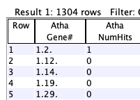 | Arab-Brap orphans
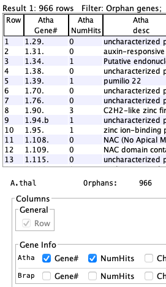 | Arab-Brap-Cabb orphans
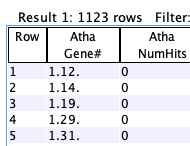 |


For self-synteny, the second species row of columns will be empty.
2.3 Auto-save columns
During a SyMAP session, when you display a new table, it will use the columns and order from the last table that was created or modified (add/remove columns).The selected columns are saved between sessions, but the order is not. The columns selection is saved in a file called .symap_saved_props in the user's home directory so that the next time you viewSymap, the table will show the same columns (but in their default order).
If you have multiple SyMAP databases, when you change between them the columns displayed are relative to the last SyMAP database queried (they may seem somewhat random to a different SyMAP database).
3. Statistics
Statistics for the query results are shown at the bottom of the results table. They can be hidden by selecting Hide Stats.
Most of the statistics are self-explanatory except the following:
Hits: These are not shown if there are just two species.
Annotated and Genes: The first is the number of hits that overlap one or more genes, where a gene can have multiple hits. The second is the number of Genes with at least one hit.
Multi-hit Genes: For each species, there is a column with the number of groups with a multi-hit gene. If there is over 2 species, this will also include the highest group number in parenthesis. For example,
A.thal Groups: #50 (50) #142 (192) B.rapa Groups: #618 (810) #984 (1794) Cabbage Groups: #847 (2641) #495 (3136) | There are 3,136 total groups.
A.thal has 50 with B.rapa and 142 with Cabbage, where the first set is 1-50, the second is 51-192, etc. |
4. Top buttons
| 1. Show | 2. MSA... | 3. View 2D | 4. Export... | 5. Report... | 6. Search... | Go to top |

The Unselect All unselects any selected rows.
4.1 Show
For the selected row, a popup will show all columns and associated information for the hit. The text in the popup can be copied.4.2 MSA...
Below is an image of a multiple alignment of gene sequences, where CDSs were loaded for all species.The right half shows the sequence, where the first row is the consensus: A 'n' (purple) is used where there is no majority base. Lowercase (green) is used if there is a least one mismatch.

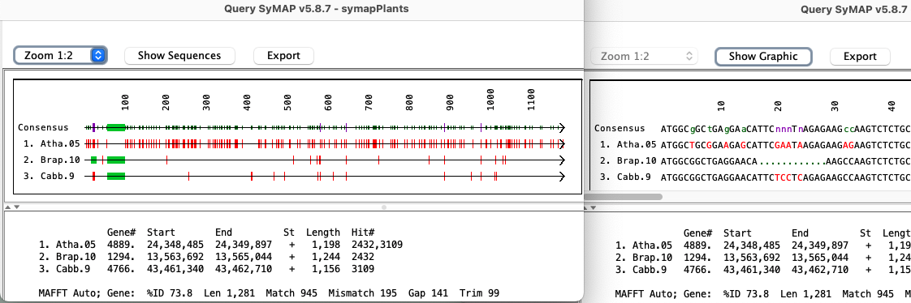
Select one or more rows from the query table. The sequences of the selected hit(s) are written out and a multiple alignment is created using either MAFFT (Katoh 2013 MBA:30) or MUSCLE (Edgar 2004 NAR:32). MAFFT can be run with multiple CPUs and the optional --auto option, where --auto takes longer but allows MAFFT to determine the best algorithm to use.
| 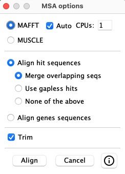 | ||||||||||||||||

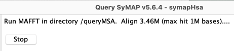 | While aligning, the line at the top of the panel will state the number
of bases aligned as shown on the right.
The Stop does not stop MAFFT or MUSCLE, that must be done manually. |

General Notes:
→ Wait for the current MSA to stop running before starting another!
It is not possible to start a new MSA from the same table, but you could start one from a different table;
they both will fail, so do NOT do this!
→ Stop: This removes the tab from the left panel, but it does not stop the execution of MAFFT or MUSCLE.
- Their processes will be called muscle for MUSCLE and distbfast for MAFFT; MAFFT may have some other process running, but distbfast seems to be the one that takes the most time/memory.
- To stop: you can type top at the command line, copy the 'process number' beside distbfast or muscle, then at the terminal, type kill -p 'process number'.
- Make sure distbfast or muscle are stopped, as they take a lot of memory!
However, if you do not see the process in the top table, then it has completed.
MAFFT Notes:
→ All executables were removed that did not seem necessary. However, I may have removed
one(s) that are used in certain unusual situations when --auto is used. Try again with --auto unchecked.
→ On Mac, if you are using MAFFT --auto, you may get a "Cannot be verified" for dndpre.
See MacOS and external programs to fix this.
4.3 View 2D

This displays the 2D view for the selected row. The region displayed can be specified by the drop-down beside the View 2D button, as follows:
| Option | Column1 | Selected Hit | 2D Hit Filters |
| Region | N/A | The hit is padded on each side by the amount indicated in the kb text box. | Show all High Block |
| Collinear | Collinear | The entire collinear set of hits for the selected hit will be shown. | Show CoSets2 High CoSets |
| Block | Block | The entire synteny block for the selected hit will be shown. | Block #N |
| Group-chr | Group | The entire group of hits of the selected hit's group will be shown. | Show all High Block |
2CoSet is short for collinear set.
The default value of the pull-down depends on the query performed, with the following precedence: Group, Collinear, Block, else Region.
| High | If selected, the selected hit is highlighted in the Popup-query color (default magenta). The coloring can also be turned off by selecting the 2D Hit Filter Hit popup (or Query) option. | |
| Gene# | If selected, the Gene# will be shown beside each gene in the 2D display (shown on 2D image on lower right), else the Annotation box will be shown. |
Example:
|
The table below shows results from the Collinear search.
The image on the right shows the 2D for the set. After the initial display, the 2D view can be changed as described in the User Guide.
The table below shows results when the Group column has a value (using Gene#, Multi-gene or Cluster search). The Group option can be used with these rows.
It is possible to select two rows for a 3-chromosome 2D, see 3-chr queries. | 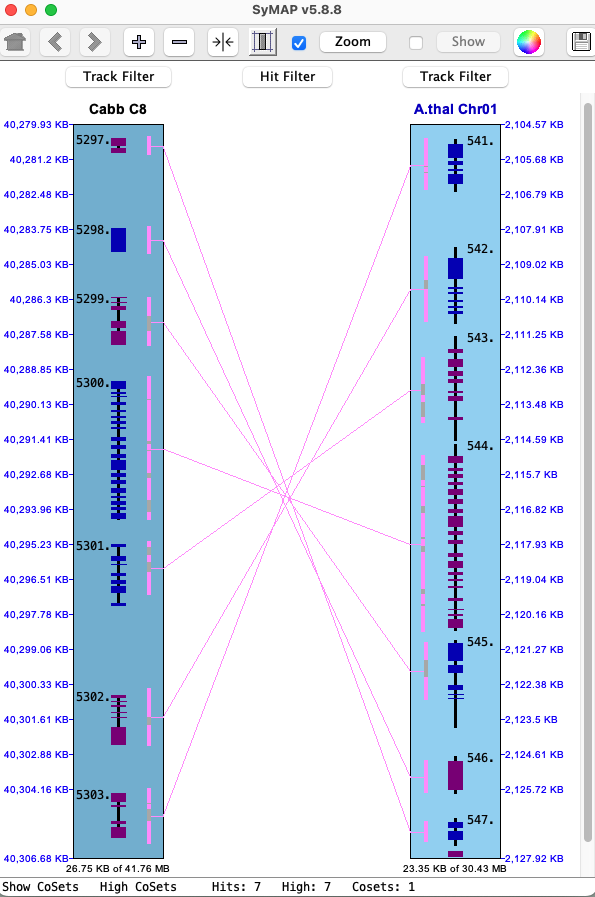 |


4.4 Export...
One or more rows can be selected for the following exports; or if no rows are selected, the entire table is exported.|
Table row and columns
CSV: Export the rows using the selected set of columns to a CSV format suitable for import into Excel. HTML: Export the rows using the selected set of columns to a HTML format suitable for viewing on the web (e.g. Example). Include Row column: This option is available because column Row is alway present, but it may be desirable to exclude it in the output. Table FASTA All pair hit sequences: (Pairs Only) For each row, the two hit sequences from the Hstart to Hend are written to file. Unique spliced transcripts: For each row, output the spliced transcripts. This is very slow to execute! For example, it took 1m15s for 500 rows. | 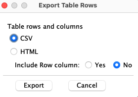 |

4.5 Report...
| Interface | Gene report | Collinear report | Multi-hit gene report | Cluster gene report | Go to top |
- The report is on the genes in the query table; hits without paired genes are ignored.
- Unless the query is for Collinear, Multi-hit or Cluster genes, a Gene report will be produced.
- This is most relevant when used with >2 species. It has not been tested for >4 species.
- Gene, Collinear and Multi-hit genes produce a reference-based report whereas the Cluster genes does not; however Cluster genes shares most of the same options.
Interface
The menu on the lower-right shows the options that will always exist. There may be additional options in between the middle lines, depending on the condition used to create the table, as discussed below.
|
Reference: In all cases, a reference must be selected; all reference genes are listed in a column,
and any genes it links to (has a hit) are referenced in the other species columns. Only annotated
species can be selected as reference.
Gene Annotation Columns: One or more annotation keywords can be entered in a comma-delimited list (e.g. product, ID); the keywords must be found in the All_anno keyword column. A column will be created containing the values of all entered keywords. Columns can be entered for any of the species (not just the reference). |
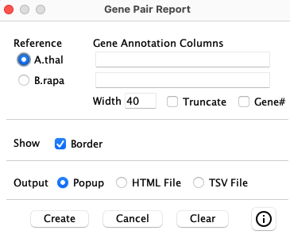 |

| Gene Annotation Columns | |
| Width | Determines the length of the annotation before wrapping around; relevant to long descriptions. |
| Truncate | Truncate long description using the width specified. |
| Gene# | Show the Gene# before the gene annotation text; Gene# provides the chromosome number and order of genes. |
| Show | |
| Border | Draw a border around each cell of the table. Otherwise, there will only be a line before each group of genes. |
| Create | |
| Popup | Displays a panel of the results, which will look just like viewing the HTML file. |
| HTML File | Writes a file that can be viewed as a web page. It is written in a human readable form such that anyone with HTML knowledge can edit it. |
| TSV File | Writes a tab-separated-values file that can be viewed with Excel or any editor. |
Additional options for >2 species: The following options will be shown between the middle lines if there are >2 species. The options are explained with the respective report.
Link: This term is used to indicate that there is a hit between two species, typically non-reference species.

For all reports:
- The reference column is in italics. In the TSV file, the reference header has an '*'.
- The annotations correspond to the genes listed for the species. A "---" indicates that there is a gene with no corresponding annotation. If there is more than one gene in a column, the corresponding annotations will be separated by a ";".
Gene Report
| Gene - additional options for >2 species | ||
| All species | Per Row | Only show rows with all species. |
| Link+ | Only show rows with all species and at least one link. | |
| All Link | Only show rows with links between all species (this often produces no results). | |
| Show | Links | Show the links. Since All Link is completely linked, this can be unchecked. |
The report lists all genes from the reference species and what genes each aligns to. The image below shows the top of two different All Link reports, one with Hsa selected as the reference and the other is with Mus selected. This was derived from a table of 382 rows.
Rows are always merged that share the same reference. The top line shows there are 29 unique Hsa genes, 28 single rows (one gene for each species) and 1 multi rows (multiple non-reference genes for at least one species). There are 3 multi rows in Mus, though none are shown in the below image.
A "=" indicates that the gene is linked to the gene next to it (ignoring the Reference column); a "+" indicates it is linked to the gene over one column (only happens when there are 4 species).

Collinear Report
Collinear sets are grouped to show the union of overlapping sets for the reference gene.| Collinear - additional options for >2 species | ||
| All species | Per Union | The reference gene must be in a collinear set with every species. |
| Show | Collinear | Displays the collinear set beside each gene. |
|
The report on the right shows the first union of the A.thal collinear sets. This was generated with Per Union checked. The '1 [3 sets]' indicates it is the first union with 3 collinear sets. For the non-reference gene columns, by default, the collinear set size and number (size.setN) is shown. For example, row 4:
The other genes in each collinear set are obvious since they share the same size.setN, e.g. #8.1 is shown in 8 rows. |
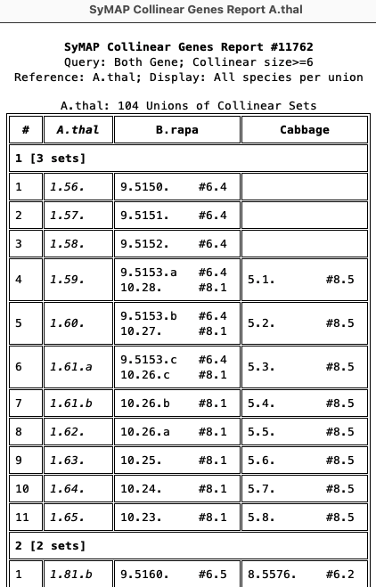 |

Multi-hit gene report
Shows reference genes that align to at least N genes, where N is the number input on the query panel.| Multi-hit gene - additional options for >2 species | ||
| All species | Per Row | Only show rows with all species. |
| Ignore | Show all rows. | |
| Show | Group | Show the group (size-number) above the respective. |
The Group (size-number) is shown above each group. This used the All species per row, which resulted in 29 rows and 43 merged sets, e.g. gene 1.1215 aligns to group 4-71 on chr5 and group 4-72 on chr8. The report was derived from a table of 94715 rows.

Cluster gene report
The cluster report has no reference, as shown on the right (i.e. no radio buttons for selection).
|
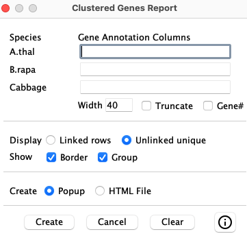 | ||||||||||||

Unlinked unique: Cluster #1 (9-1) shows that there are two Hsa gene, where 17.47 has 3 links (11.650, 17.53, 17.54); Mus has 4 genes which all have links; Pan has 2 genes with links.
Linked rows: Every row has all the linked genes. The second row of 9-1 is the only row in that cluster that is linked across all species (asr: all species row).

4.6 Search...
| The Search... produces a popup as shown on the right.
The columns in the popup will vary depending on the columns displayed in the table. It will only show the columns that are searchable. Besides the top 4 shown (see image on right), the species Gene# and all of the Gene Annotation columns are searchable.
| 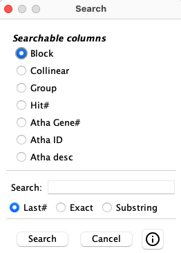 |

- On the first search, the number M of occurrences of the search string will be found.
- The table will position to the next row with the search string and that row will be selected; a message on the panel will state "Found N of M".
- If you close the window between searches and select it again, it will start where it left off.
- If all rows with the search string have been found, there will be a message on the panel saying "Found all M values".
Changing any value on the panel also restarts the search.
> Results

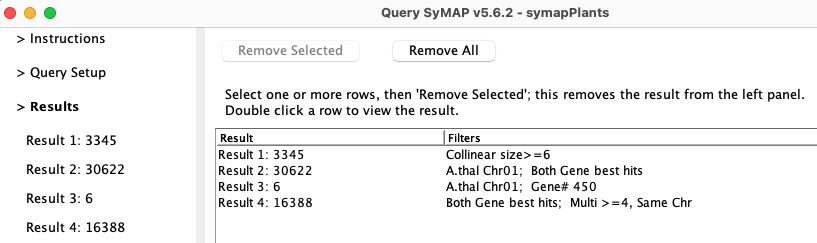
All query results are listed under the > Results tab on the left. Clicking this tab shows the table of queries illustrated above. Query results can be displayed by clicking a result on the left panel, or double-clicking it in the list of results table shown above.
The only way to remove a query result from the left tab is by selecting it in this table followed by Remove Selected. Remove all queries with Remove All.
| Go to top |
Email Comments To: cas1@arizona.edu